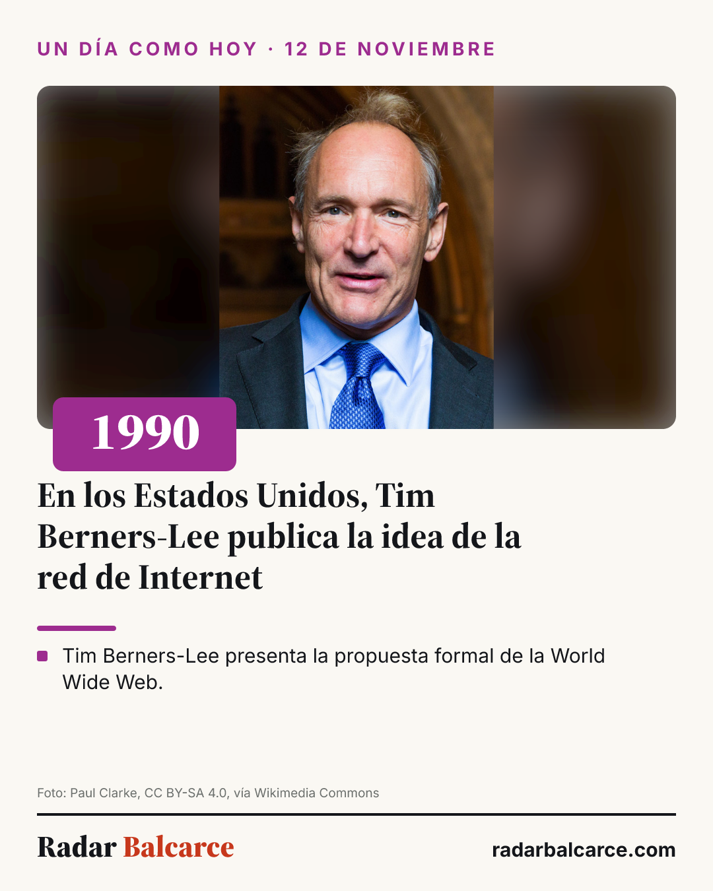

Web, redes, placas, gráficos, infografías, mails y videos. Antes de armar cualquier pieza, se mira acá: colores, letras, formatos, la firma de cierre y lo que nunca se hace.
radarbalcarce.com, sin «www» ni «.com.ar». En voz alta: «Radar Balcarce punto com».#Balcarce #RadarBalcarce; hasta tres más de la nota; cinco como máximo.Serif negrita · «Radar» en tinta, «Balcarce» en rojo
#14161A y «Balcarce» en rojo #C7381C.radarbalcarce.com a la derecha.El color lo da lo que se cuenta, no el día ni la hora. Rotula la pieza y marca el rasgo grande (el año, la cifra, la franja); lo demás es tinta sobre papel. Todos se leen con letra blanca encima.
CRITERIO-REDES.md § 8, a COLOR_SECCION (reels/placa.mjs) y al sitio. Reservados para secciones nuevas: fucsia #C0258F y celeste #0A7C99.Negrita 700 / Black 900
Sólo títulos de nota, de sección, de tarjeta de invitación, el año grande de las efemérides y la firma. Nunca cifras ni nombres de servicio.
Todo lo demás
Etiquetas, datos, cifras (siempre con números tabulares) y texto corrido. Rótulos en mayúsculas con letra abierta.
| Rol | Tamaño | Uso |
|---|---|---|
| Etiqueta | 11 px · 600 · mayúsculas · letra abierta | Primera línea de cada tarjeta, en gris |
| Meta | 12,5 px | Hora, aclaraciones, créditos |
| Texto | 14 px | Texto corrido de tarjetas |
| Acción | 13 px · 600 · rojo + flecha → | «Ver la semana →». El rojo es el acento de las acciones, no del dato |
| Dato | 16 px · 700 | El dato de servicio, en tinta |
| Dato grande | 22 px · 700 | La cifra de la tarjeta |
| Cifra | 44 px · 700 | Sólo la temperatura del clima |
Archivos de letra: reels/marca/fuentes (Inter 400/500/600/700, Source Serif 4 700/900). En dibujos con resvg la familia serif se llama «Source Serif 4 60pt».

#FAF8F3; rótulo chico en mayúsculas con el color de la sección.radarbalcarce.com. Toda imagen nuestra lo lleva, para que viaje con ella si la comparten.#Balcarce #RadarBalcarce primero.| ¿Qué armo? | Medida | Color | Letra | Cierre |
|---|---|---|---|---|
| Infografía / imagen para compartir | 1080 × 1350 | Sección | Serif título, Inter texto | Raya + firma + radarbalcarce.com |
| Placa de reel o historia | 1080 × 1920 | Sección | Igual | Igual, fila 1478 |
| Posteo de nota | Placa con foto | Sección | Igual | Igual |
| Gráfico de datos | 1200 × 675 o 1080 × 1350 | Sección; datos en tinta | Inter con cifras tabulares | Igual |
| Página o tarjeta web | Responsive | Variables --s-* | Escala de la web | Cabecera con la firma |
| Mail o mensaje | — | — | — | «Radar Balcarce · radarbalcarce.com» al final |
CRITERIO-REDES.md § 8 | Tabla oficial de colores y diseño de placas (una prueba la compara con el código) |
web/app/globals.css | Variables de color, tipografía y escala de la web |
reels/placa.mjs | COLOR_SECCION y las placas |
v3/redes/efemerides/placas.mjs | La infografía estándar (modelo para el resto) |
docs/3-0/FORMATO-DE-IMAGENES.md | Formato de imágenes compartibles |
CRITERIO-EDITORIAL.md | Cómo se escribe, qué entra y qué no |
Este manual se actualiza cada vez que se decide algo nuevo de la marca. Fecha de esta versión: 12/11/2026.